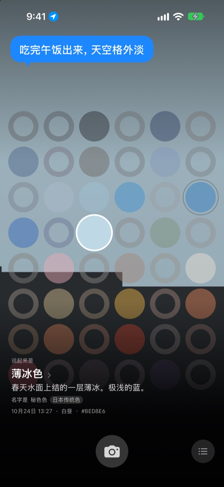
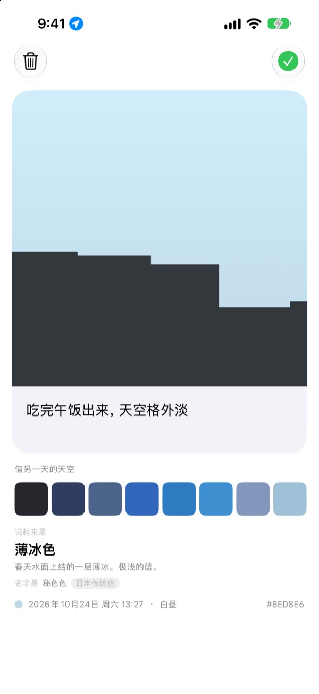
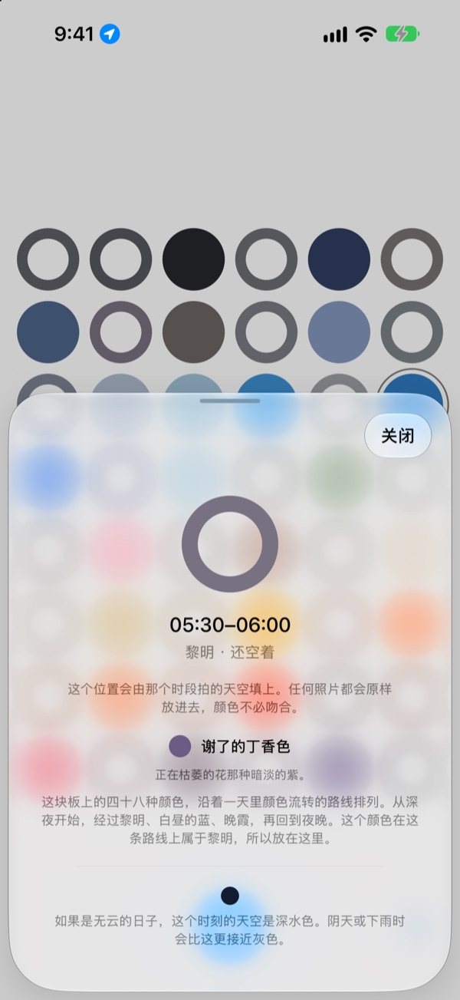
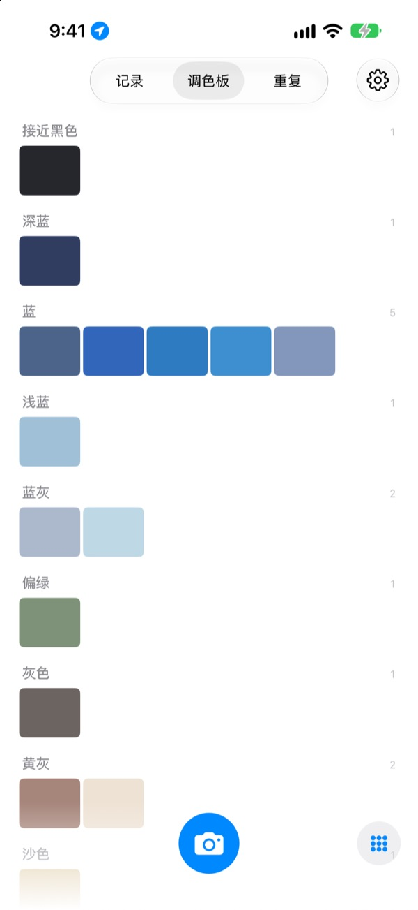

今天的天空
是什么颜色？
拍一张天空，四十八格的格板里，那个时刻的格子就会填上你拍下的颜色。它还会得到一个和这颜色相似的名字，比如薄冰色、泳池瓷砖色、熟柿子色。
免费。无需账号，也不用登录。

亲手点点这块格板
点一下格子，就能看到它是一天中哪个时候的天空。放入一张天空照片，此刻的格子就会被填上；把日子往后翻，还能看到格板如何变化。
天天都看天空，却记不起一种颜色
上班路上抬头看到的天空，午饭后走出门时的天空，到了晚上就想不起是什么颜色了。相册里留下的天空照片，也淹没在其他照片之间。SkyDex 把天空照片收集成颜色，在一块格板上呈现今天的天空走过的路。
每片天空都有名字
拍下的颜色先会得到一个能在脑海中浮现的名字，比如薄冰色、泳池瓷砖色、熟柿子色；下面再附上一个出自韩国传统色、日本传统色、颜料或标准色的名字。
足够接近时写“名字是”，差得远时就如实写“最接近的名字是”。

留下一句话
拍完，卡片会立刻打开。写下望着那片天空时的念头，之后在格板上点那一格，这句话就会重新浮现在天空之上。
还可以把另一天收集的天空颜色叠到这张照片的天空上，做成图片分享。

空格为你指路
点一下空格，就能知道这一格是一天中的什么时候、该去找什么颜色。如果是无云的日子，此刻的天空会是什么颜色，也会按你所在地的日出日落时间告诉你。
颜色不必对上。阴天的灰，也是那一天的天空色。

记录、调色板、重复
按时间顺序浏览拍下的天空，把收集的颜色按蓝、灰色、沙色等色系整理成调色板。在另一天的同一时刻再拍一次，两片天空就会并排在一起。
主屏幕小组件让你随时看到今日格板和今日天空。

三步就能开始
- 1
抬头看天
按下格板下方的相机按钮，让天空填满正方形再拍。
- 2
格子被填上
此刻的格子会填上你拍下的颜色，并得到一个名字。
- 3
留下一句话
在打开的卡片上，写下看着那片天空时的想法。
格板这样划分一天
- 深夜 · 0点–5点
- 6 格
- 黎明 · 5点–8点
- 6 格
- 白昼 · 8点–16点
- 12 格
- 傍晚前 · 16点–18点
- 6 格
- 晚霞 · 18点–21点
- 12 格，每 15 分钟一格
- 夜晚 · 21点–24点
- 6 格
天色变化快的晚霞时分，格子排得密；长时间几乎不变的深夜，格子留得宽。最上面是深夜，越往下，一天就走得越远。
常见问题
格子是怎么填上的？
今天拍的天空，会填进拍摄时刻的那一格。即使颜色和预想的不同，也照样放进去，因为那个时刻的天空确实就是那样。以前收集的天空按颜色放入：和某一格的颜色足够接近，就填上那一格，而且一片天空只填一格。
昨天填满的格子，今天空了。
格板只属于今天。昨天的天空按时刻填上的格子，到了今天只按颜色重新匹配。所以有的日子几乎填满，有的日子看起来空空的。照片并没有消失：收集的天空全都在记录里，按颜色排列则在调色板里。
填上的格子越来越淡。
这是有意为之。照片会保持原本的颜色一周，之后在八周里慢慢变淡。它不会被删除，也不会淡到完全看不见。在那个时段再拍一次天空，格子就会立刻恢复原色。没有会中断的连续打卡，也没有需要追回的数字。
颜色一定要对上吗？
不用。没有通过或失败的判定。拍下的照片一定会保存，阴天的灰也是那一天的天空色。
为什么需要位置？
只用于在你点按空格时，按你所在地的日出日落时间，告诉你无云的日子此刻天空是什么颜色。只使用精确到公里的大致位置，坐标不会附在照片上。拒绝也能照常使用，这时以首尔为准。
相册里的天空也能放进来吗？
可以。从“照片”App 里选的天空，同样会裁成正方形放入，并像刚拍的天空一样填上此刻的格子。
怎么删除照片？
打开照片点“删除”，或在记录里向左滑动即可。设备和 iCloud 中的照片会一起删除。删除 App 后，iCloud 里的副本仍会保留，重新安装就能找回收集的天空。
换手机后，收集的天空会怎样？
收集的天空保存在你自己的 iCloud 中，在登录同一 Apple 账户的新设备上可以接着用。没有账号，也没有服务器，照片和颜色不会发送给开发者。没有广告，也没有追踪。
真的免费吗？
是的，所有功能都免费。喜欢的话，可以在 App 内给开发者打赏，但打赏不会解锁任何功能。
支持哪些设备？
支持 iOS 17.0 或更高版本的 iPhone，仅限竖屏使用。
遇到问题、奇怪的表现，或有什么想说的，请发邮件到 leeo@kakao.com。附上当时的情况和 iOS 版本，会更容易找到原因。